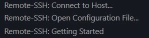
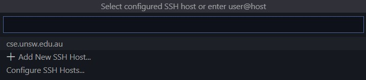

My CSE home computing setup
Someone requested me to write up how I've set up for home computing, so here we go. I've posted here rather than Ed just so this can be reused easily in the future.
Not all of this may be relevant to you - I suspect that most people only want to set up VSCode to use SSH, and perhaps set up an SSH keypair.
If you're not doing a CSE degree, a lot of this won't be worth it. However, if you are, you're inevitably going to be doing some of this eventually, and you'll be able to use your setup for the next few years.
Summary
I work across two devices. I use SSH via VSCode if I want to work on the CSE machines, or I use the Windows Subsystem for Linux (WSL) if I want to work on my local machine, especially if I'm on a bus or a train. I use a GitHub repository to sync code between my two devices and the CSE machine.Working on CSE machines over SSH with VSCode
This should be applicable to people across all operating systems. However, if you're on macOS, use Cmd instead of Ctrl.
- Install and open Visual Studio Code. You can find a download here.
- Open the Extensions menu. You can access it using Ctrl+Shift+X.
- Search for and install the Remote-SSH extension. While you're here, you should also install the C/C++ extension by Microsoft. Once this is done, you might be prompted to reload the window.
-
Open the Remote-SSH menu. This can be done by clicking this button
 in the bottom left. The menu should look like this:
in the bottom left. The menu should look like this:
 -
Click Connect to Host. In the field that shows up, type in
z5555555@cse.unsw.edu.au, using your zID instead. Hit Enter. A new window will open. If asked for a platform, select Linux. Enter your password when prompted. If your password is wrong, you will prompted to retry. Once you've done that, you should be connected successfully!- Use Ctrl+O to open a file.
- Use Ctrl+` (that's the key to the left of the number row) to open a terminal window.
- We can save some time by adding this to our hosts list. Click the SSH icon in the bottom left again, click Connect to Host, and this time, click Add New SSH Host.
- Enter the following command:
ssh z5555555@cse.unsw.edu.au -A, replacing with your own zID again, and hit Enter. If prompted which configuration file to save to, use the first one. - You should now see cse.unsw.edu.au on the Connect to Host menu. Now you don't have to type it in each time. 
- If you want to avoid having to enter your password each time, scroll down to Using SSH keypairs.
Other useful VSCode stuff

Editor rulers
The COMP1511 style guide requires you to make sure your lines aren't longer than 80 characters (and it's good practice to do so!). You can make VSCode show you a handy little ruler to make sure your lines aren't too long.
- Open the settings.json file. To do this, press Ctrl+Shift+P and search for Open Settings (JSON). A file should open.
-
We need to add to this file. You should see that the last line is a curly brace like this:
}. What we want to do is add a comma to the second last line. Then, we create a new line after the comma, and paste this:"[c]" :{ "editor.rulers" : [ 80 ] }
Extensions
VSCode has heaps of themes and extensions. Some which I use:
- C/C++ Snippets. Occasionally saves time with suggestions.
- Material Icon Theme.
- Dainty and Dainty - Material Theme. I personally use Dainty - Material Theme Ocean.
- Discord Rich Presence. If you use Discord, then it'll update your currently playing status with details of what you're coding on. If one of your friends tries to drag you into a voice call, you can just open up VSCode and tell them that you're busy working :P
Working remotely: Using WSL
Windows 10 now supports running Linux distributions from within it. We can set this up so that we can easily use a lot of the Linux commands and scripting which are taught in CSE degrees, and easily compile and run our code without connecting to CSE computers, even if we have no internet connection.
- Open PowerShell. Type in PowerShell into Windows Search, right click on the result and click Run as administrator. Select Yes if a prompt shows up.
- Run the following command:
Enable-WindowsOptionalFeature -Online -FeatureName Microsoft-Windows-Subsystem-Linux
If you are prompted to restart your computer, do so. - Open the Microsoft Store. You can again do this using Windows Search.
- Search for Ubuntu and install it. Ubuntu currently has the best support for WSL.
- Once installed, open Ubuntu. You can do this by using Win+R and typing in
bash. Once you do this, a terminal should open! - You'll be guided through setting up an account. Make sure you remember what password you use.
- We need to install a compiler. We'll be using gcc. You can use it just like dcc, but you'll get fewer error messages. To install, run the following command:
sudo apt-get install build-essential
Enter your password when prompted.
You should now be able to use the text based Linux commands you learn during the course, replacing dcc with gcc. (Note: If you've learnt about dcc --leak-check, it won't work with gcc.)
If you use VSCode, you can use code [filename] to open a file. If you use Vim, Vim will work as normal. However, gedit won't work. Google 'wsl x server' if you're really desperate to use it.